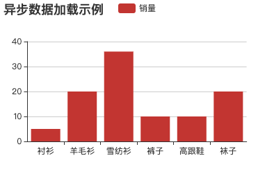
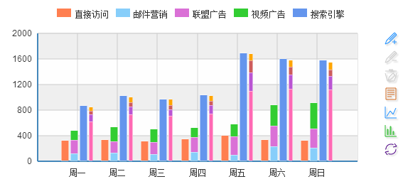
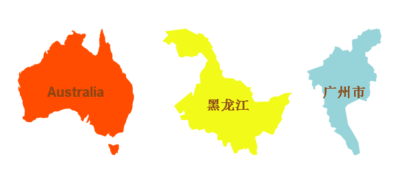
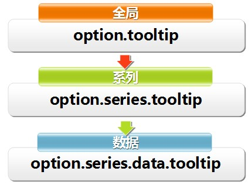

ECharts, de código abierto, proviene del equipo de visualización de datos front-end comercial de Baidu. Basado en HTML5 Canvas, es una biblioteca de gráficos de JavaScript puro que proporciona gráficos de visualización de datos intuitivos, vívidos, interactivos y personalizables. Las innovadoras funciones como el recálculo por arrastre, la vista de datos y el recorrido de rango de valores mejoran enormemente la experiencia del usuario y otorgan a los usuarios la capacidad de extraer e integrar datos. ——En la era del big data, es hora de redefinir los gráficos de datos.
Architecture
ECharts (Enterprise Charts, biblioteca de gráficos para productos comerciales)Proporciona la biblioteca de gráficos común para productos comerciales; la capa subyacente se basa enZRender, crea componentes básicos como sistema de coordenadas, leyenda, tooltip, caja de herramientas, y sobre esta base construye gráficos de líneas (gráficos de área), gráficos de barras (gráficos de columnas), gráficos de dispersión (gráficos de burbujas), gráficos circulares (gráficos de anillo), gráficos de velas (K-line), mapas, gráficos de acordes y diagramas de diseño de fuerza dirigida. Al mismo tiempo, admite apilamiento de cualquier dimensión y visualización mixta de múltiples gráficos.

Los gráficos combinados son más expresivos e interesantes. Los gráficos que ofrece ECharts (9 categorías y 14 tipos en total) admiten cualquier combinación:
Gráfico de líneas (gráfico de área), gráfico de barras (gráfico de columnas), gráfico de dispersión (gráfico de burbujas), gráfico de velas (K-line), gráfico circular (gráfico de anillo), gráfico de radar, mapa, gráfico de acordes, diagrama de diseño de fuerza dirigida.
Un gráfico estándar en caso de combinación:
Contiene módulos de leyenda única, caja de herramientas, zoom de área de datos y recorrido de rango de valores, así como un sistema de coordenadas cartesianas (que puede incluir uno o más ejes de categoría, uno o más ejes de valor, y hasta un máximo de cuatro: arriba, abajo, izquierda y derecha).

Recálculo por arrastre
La función de recálculo por arrastre (patentada) aporta una experiencia de usuario sin precedentes en los gráficos estadísticos. Permite a los usuarios extraer e integrar eficazmente datos estadísticos, incluso intercambiar datos entre múltiples gráficos, otorgando a los usuarios la capacidad de explorar e integrar datos.

Vista de datos
Si los datos que presentas son lo suficientemente importantes para los usuarios, no se conformarán con ver los gráficos visualizados. ¿Debemos satisfacer una por una sus necesidades de descarga, guardado, intercambio de datos, procesamiento e integración de los datos existentes, etc.?
Quizás solo necesites proporcionar un texto de datos separado por comas y ellos lo entenderán; ¡esa es la vista de datos de ECharts! Por supuesto, puedes sobrescribir el método de salida de la vista de datos para presentar los datos a tu manera única.
Si tus usuarios son lo suficientemente avanzados, incluso puedes activar la función de edición de la vista de datos. En comparación con el recálculo por arrastre, ¡esto es una modificación de datos por lotes!

Cambio dinámico de tipo
Muchos tipos de gráficos son similares en su capacidad expresiva, pero debido a las diferencias en los datos, los requisitos de presentación y las preferencias personales, el impacto visual del gráfico final varía considerablemente. Por ejemplo, elegir entre un gráfico de líneas y un gráfico de barras, o decidir si los datos de la serie deben apilarse o mostrarse sin apilar, siempre resulta un dolor de cabeza.
ECharts ofrece cambio dinámico de tipo, lo que permite a los usuarios cambiar libremente al tipo de gráfico y estado de apilado que necesiten.

Conmutador de leyenda
La presentación simultánea de datos de múltiples series muestra un contenido rico, pero ¿cómo permitir que los usuarios cambien a las series individuales que les interesan?
ECharts proporciona un conmutador de leyenda multidimensional cómodo y rápido, que permite cambiar en cualquier momento a la serie de datos que te interese.

Selección de área de datos
Los datos pueden ser infinitos, pero el espacio de visualización siempre es limitado. El componente de selección de área de datos proporciona la capacidad de recorrer grandes volúmenes de datos, permitiendo al usuario seleccionar y mostrar el área de datos que le interesa.
Combinado con líneas de marca dinámicas de media (valores extremos), las marcas muestran una poderosa capacidad de análisis de datos.

Vinculación de múltiples gráficos
Mostrar simultáneamente múltiples series de datos en el mismo sistema de coordenadas cartesianas a veces puede causar confusión, pero tienen una fuerte correlación y no pueden separarse.
ECharts ofrece la capacidad de vincular múltiples gráficos (connect). Lo que puede hacer no es solo mostrar detalles al pasar el ratón; los múltiples gráficos conectados comparten eventos de componentes y también logran el empalme automático al guardar imágenes.

Recorrido de rango de valores
Los gráficos basados en coordenadas (como mapas y gráficos de dispersión) pueden mostrar el tamaño de los valores mediante cambios de color, presentando la distribución de datos de forma intuitiva y visual.
Pero ¿cómo enfocarse en los valores que me interesan? Hemos creado la función llamada recorrido de rango de valores, que te permite filtrar valores fácilmente.

Efectos de luz brillante
Sabemos que muchas veces necesitamos algo que llame la atención.
ECharts admite efectos de luz brillante para marcas y líneas de marca, especialmente en mapas, lo que permite lograr fácilmente el efecto de visualización de datos de migración de Baidu.

Gráfico de dispersión a gran escala
¿Cómo mostrar cientos de miles o incluso millones de datos discretos para encontrar su distribución y agrupaciones? Parece que no hay otra opción que utilizar herramientas estadísticas profesionales (como MATLAB).
No, ECharts ha inventado un gráfico de dispersión a gran escala basado en píxeles (patentado). Un área de dispersión de 900 x 400 puede presentar 360,000 conjuntos de datos sin repetición. Para aplicaciones convencionales, con los navegadores modernos es suficiente para mostrar fácilmente datos de dispersión a nivel de millones.

Adición dinámica de datos
Si necesitas mostrar datos que cambian en tiempo real, creemos que esta interfaz dinámica te será de gran ayuda.
var myChart = echarts.init(document.getElementById('main'));
$.get('data.json').done(function (data) {
myChart.setOption({
title: {
text: '异步数据加载示例'
},
tooltip: {},
legend: {
data:['销量']
},
xAxis: {
data: ["衬衫","羊毛衫","雪纺衫","裤子","高跟鞋","袜子"]
},
yAxis: {},
series: [{
name: '销量',
type: 'bar',
data: [5, 20, 36, 10, 10, 20]
}]
});
});

Asistencia de líneas de marca
¿Línea de tendencia? ¿Línea de promedio? ¿Tendencia futura? ¿Valor de corrección? Los usuarios con necesidades sabrán naturalmente el propósito.
Proporcionar asistencia de líneas de marca es una función necesaria en los gráficos de velas. Sí, ¡estamos desarrollando el gráfico de velas!

Apilado multidimensional
Admite el apilado de datos de múltiples series y múltiples dimensiones. Junto con elementos gráficos de escala automática y el sistema de coordenadas cartesianas, puede presentar gráficos estadísticos con más significado.

Modo de mapa de subregión
Los tipos de mapa admiten world, china y las 34 provincias, municipios y regiones autónomas de todo el país. También admite el modo de subregión: a través del tipo de mapa principal se expanden los mapas de las subregiones contenidas, produciendo fácilmente mapas simplificados de 176 países y regiones del mundo y más de 600 provincias y ciudades del país.

Extensión de mapa GeoJSON
Los mapas incorporados se basan en datos geográficos GeoJSON estándar, comprimidos mediante un eficiente algoritmo de compresión (su tamaño es solo alrededor del 30% del GeoJSON estándar). Si los tipos o datos de mapas incorporados no satisfacen las necesidades de tu proyecto, puedes generar los nuevos tipos que necesites mediante un simple registro dinámico.

Marcas y líneas de marca
Agregar marcas adicionales es una función de uso frecuente, como marcar ubicaciones específicas en un mapa, marcar puntos extremos en un gráfico de líneas o dibujar líneas de marca de tendencias en un gráfico de barras. Toda la serie de gráficos de ECharts admite la función de marcas y líneas de marca, y de forma natural puede responder a las funciones interactivas de componentes como el conmutador de leyenda y el recorrido de rango de valores.
Personalización
Más de 500 opciones configurables combinadas con un diseño de control multinivel satisfacen necesidades de personalización altamente adaptadas.

Interacción de eventos
Puede capturar eventos de interacción del usuario y eventos de cambio de datos para lograr la vinculación entre los gráficos y el exterior.

Recursos relacionados
- Tutorial de ECharts:https://www.example.com/echarts/echarts-tutorial.html
- Descarga de ECharts:https://github.com/apache/incubator-echarts
- Sitio web oficial de ECharts:https://www.echartsjs.com/zh/index.html
- Tutorial de HTML5 Canvas:https://www.example.com/html/html5-canvas.html
- ZRender：https://www.example.com/w3cnote/html5-canvas-zrender.html